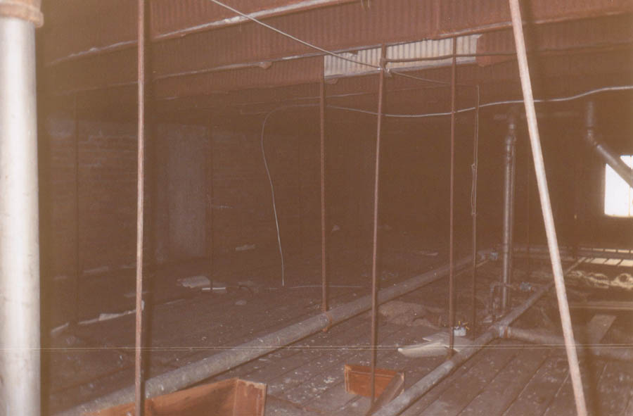
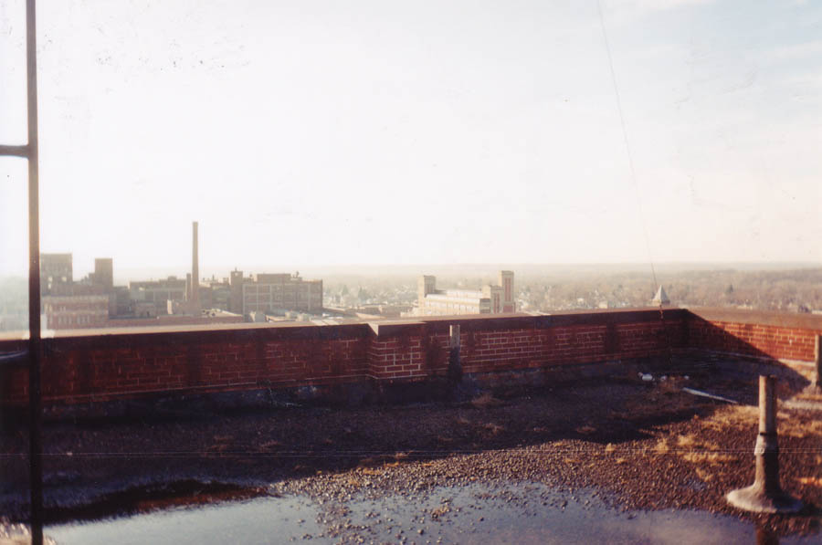
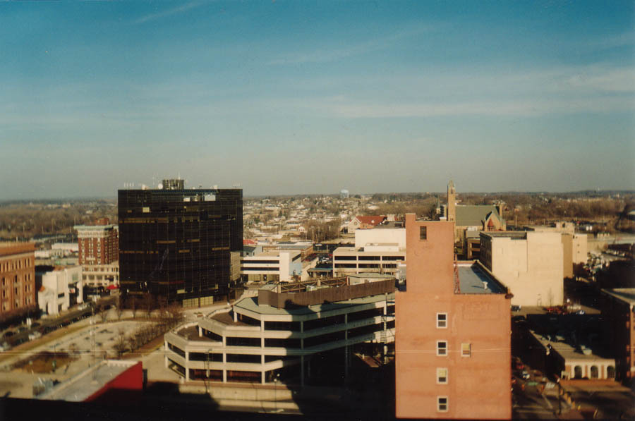
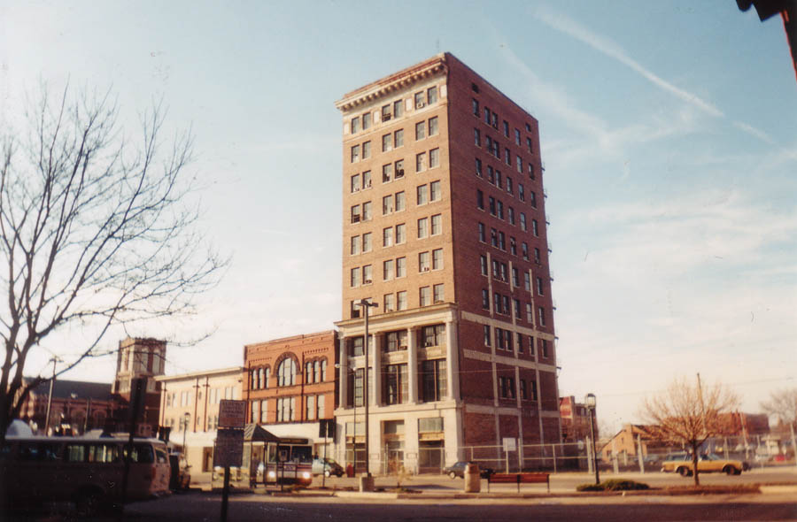

The Roof of the Tecumseh Building

The twelfth floor of the Tecumseh Building is cut off by a crawlspace which is full of wires and birds' nests. Just above it is the door to the roof.

I'm not positive, but I think this is the second-tallest building in Springfield. They have a pretty big hospital, and it might actually be a little taller, but the Tecumseh is probably the tallest thing downtown other than the Credit Life Building (the large black building on the skyline). This is nothing compared to a city like Detroit, of course; their abandoned Book Cadillac Hotel is 37 stories tall.

The view from the roof was quite impressive, although I was nervous about being seen. All in all I'd say the Tecumseh was one of the most interesting abandoned buildings I've been through, and certainly one of the best-preserved. I'd recommend it for the dentists' chairs alone. If you'd like to visit it, get on West High Street in downtown Springfield and look on the north side of the street. The Tecumseh is apparently slated for renovation into apartments; to read about the project and view some photos and blueprints, go to the Shremshock Architects page on the topic. And if you happen to know anything about the place, please drop me a line.

Back
forgottenohio@yahoo.com